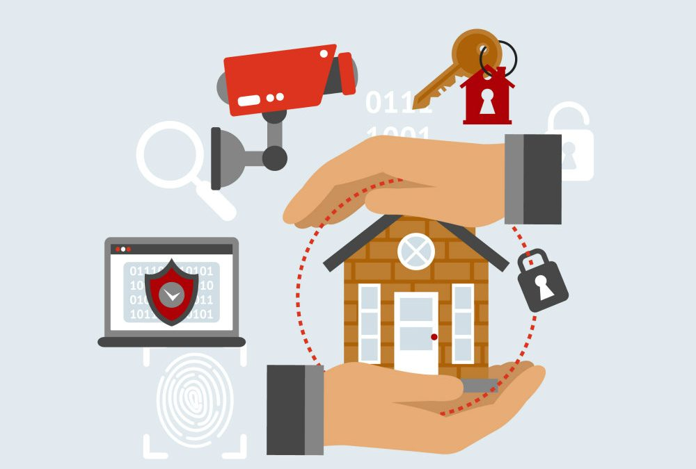

Segurança
Definição
Segurança inteligente refere-se a sistemas e tecnologias que utilizam inteligência artificial, automatização e integração para monitorar e proteger propriedades, empresas e pessoas de forma mais eficaz.
Estes sistemas combinam diferentes dispositivos, como câmeras, sensores de movimento, alarmes e aplicativos móveis, para oferecer controle em tempo real e respostas rápidas a situações de risco.
- Integração Tecnológica com outros sistemas:
Sistemas inteligentes unem diferentes dispositivos e também outros sistemas, como sistemas de iluminação e portarias eletrônicas, para um controle abrangente. - Monitoramento Remoto:
Permitem acompanhar o ambiente monitorado por meio de smartphones ou computadores, com acesso a imagens e alertas em tempo real. - Automação e Inteligência Artificial:
Utilizam IA para identificar atividades suspeitas e programar ações automatizadas, como acender luzes ou trancar portas. - Detecção e Alerta:
Detectam atividades suspeitas, como invasões ou incêndios, e enviam alertas instantâneos. - Resposta Rápida:
Permitem respostas rápidas a situações de risco, como chamar a polícia ou enviar segurança privada.
Componentes e Funções
- Segurança mais ampla com uma proteção mais abrangente contra diversos riscos:
- Resposta mais rápida
- Controle em tempo real
- Mais conveniente e acessível
- Menor custo